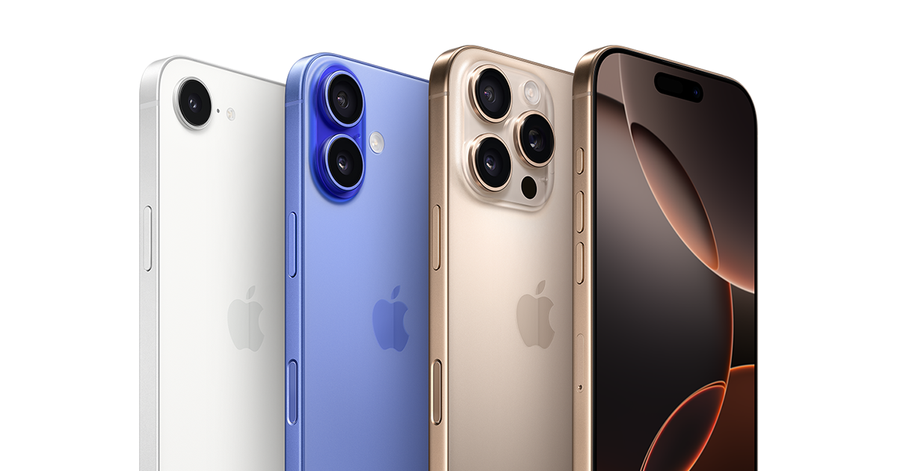

Készítette: Szél Ferenc
Kezdőlap | Telefon típusok | Technológia
A mobiltelefon-piacot ma néhány nagy márka uralja. Ezek közül kiemelkedik az Apple iPhone szériája, a Samsung Galaxy készülékek, a Xiaomi termékcsalád, a Huawei és a Google Pixel. Mindegyik gyártónak megvan a saját stílusa, funkciói és előnyei.
Ha például fontos számodra a kamera minősége, érdemes az iPhone-t vagy a Google Pixel modelleket választani. Ha az ár-érték arány döntő, akkor a Xiaomi vagy a Samsung középkategóriás modelljei lehetnek jó választások.
Nézd meg a részletes listát a PhoneArena weboldalon!